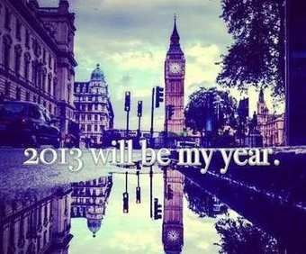

Like every personal website I can think of, this might sound cliché... but I wanted to create a space that feels like mine, while also being able to share it with everyone else.
I am a very visual person, and what you see on this website is a bit of what I like and reflects who I am, and those who know me in person would agree, I think, lol. That's why you probably noticed some influence from the 2013 aesthetic, including my "amazing" sense of humor and ideas. I wanted this site to feel that way because that's what I really like. Or maybe I'm feeling nostalgic right now, idk.

Right now I can't tell you exactly where this website is going in the future. And honestly, I think we don't need to know yet... but you are here to see how it changes, how I change, just like a "normal" person does.
So probably you're asking yourself... why is this mexican guy writing this whole thing in English? The reason is pretty simple: I'd like that more people can read me, no disrespect to my close friends lol (who mostly speak Spanish, like I do). It also sucks to code everything in English, and send prompts in Spanish to Claude, it just doesn't match the vibe, you know? That's why I decided to keep it 💯% real witchu. Regardless, I will start writing in Spanish depending on the topic, just right now I'm leaning more towards English. And obviously there's a translation toggle button on the right top corner 😎.
More context about the idea of creating a personal website:
I've had this idea of a personal website sitting somewhere in the back of my head for quite some time now.
I imagined having a space where I could share ideas, things I like, what I've learned, and mostly random stuff that other people could find cool or interesting.
Most of my life I had this idea that if you don't share the things that make you happy, you somehow get to keep them more for yourself, for more time, without anyone questioning your happiness. Because at the end of the day, there's always someone who doesn't want to see you happy...
Looking back, that's a very selfish way of thinking, probably driven by fear.
Personally, I learned a lot simply by listening to people who think the opposite way. And lately I've made some reflection about it and ended up deciding that I also want to be someone who thinks like that. So I said to myself: fuck gatekeeping things... we should share at least a bit of something you're passionate about. You can also find joy doing it. It doesn't matter who reads it or not. You never know who you might be able to help or motivate by sharing.
That's why I added a comment/suggestions section to every post. I'd like you to share something with me too. A thought, an opinion, a recommendation, feedback, or whatever comes to mind. If you're too shy to post your name in the comments, you can always 'slide thru' my dms or send me an email if you are old fashioned 😉.
I think this might be a fun way to connect with more people.
And what better way to connect than by sharing something, and having someone share something back? Right? Que no?
That's what it's all about.
Say something back
thoughts, opinions, recommendations, whatever comes to mind.